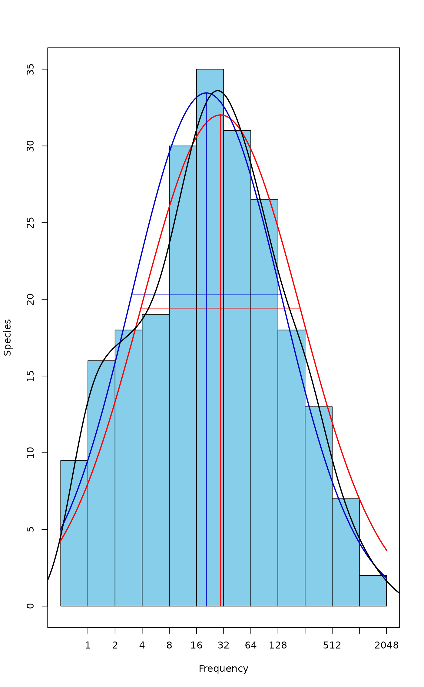

Fit Fisher's Logseries and Preston's Lognormal Model to Abundance Data
fisherfit.RdFunction fisherfit fits Fisher's logseries to abundance
data. Function prestonfit groups species frequencies into
doubling octave classes and fits Preston's lognormal model, and
function prestondistr fits the truncated lognormal model
without pooling the data into octaves.
Usage
fisherfit(x, ...)
prestonfit(x, tiesplit = TRUE, ...)
prestondistr(x, truncate = -1, ...)
# S3 method for class 'prestonfit'
plot(x, xlab = "Frequency", ylab = "Species", bar.col = "skyblue",
line.col = "red", lwd = 2, ...)
# S3 method for class 'prestonfit'
lines(x, line.col = "red", lwd = 2, ...)
veiledspec(x, ...)
as.fisher(x, ...)
# S3 method for class 'fisher'
plot(x, xlab = "Frequency", ylab = "Species", bar.col = "skyblue",
kind = c("bar", "hiplot", "points", "lines"), add = FALSE, ...)
as.preston(x, tiesplit = TRUE, ...)
# S3 method for class 'preston'
plot(x, xlab = "Frequency", ylab = "Species", bar.col = "skyblue", ...)
# S3 method for class 'preston'
lines(x, xadjust = 0.5, ...)Arguments
- x
Community data vector for fitting functions or their result object for
plotfunctions.- tiesplit
Split frequencies \(1, 2, 4, 8\) etc between adjacent octaves.
- truncate
Truncation point for log-Normal model, in log2 units. Default value \(-1\) corresponds to the left border of zero Octave. The choice strongly influences the fitting results.
- xlab, ylab
Labels for
xandyaxes.- bar.col
Colour of data bars.
- line.col
Colour of fitted line.
- lwd
Width of fitted line.
- kind
Kind of plot to drawn:
"bar"is similar bar plot as inplot.fisherfit,"hiplot"draws vertical lines as withplot(..., type="h"), and"points"and"lines"are obvious.- add
Add to an existing plot.
- xadjust
Adjustment of horizontal positions in octaves.
- ...
Other parameters passed to functions. Ignored in
prestonfitandtiesplitpassed toas.prestoninprestondistr.
Details
In Fisher's logarithmic series the expected number of species
\(f\) with \(n\) observed individuals is \(f_n = \alpha x^n /
n\) (Fisher et al. 1943). The estimation is possible only for
genuine counts of individuals. The parameter \(\alpha\) is used as
a diversity index which can be estimated with a separate function
fisher.alpha. The parameter \(x\) is taken as a
nuisance parameter which is not estimated separately but taken to be
\(n/(n+\alpha)\). Helper function as.fisher transforms
abundance data into Fisher frequency table. Diversity will be given
as NA for communities with one (or zero) species: there is no
reliable way of estimating their diversity, even if the equations
will return a bogus numeric value in some cases.
Preston (1948) was not satisfied with Fisher's model which seemed to
imply infinite species richness, and postulated that rare species is
a diminishing class and most species are in the middle of frequency
scale. This was achieved by collapsing higher frequency classes into
wider and wider “octaves” of doubling class limits: 1, 2, 3–4,
5–8, 9–16 etc. occurrences. It seems that Preston regarded
frequencies 1, 2, 4, etc.. as “tied” between octaves
(Williamson & Gaston 2005). This means that only half of the species
with frequency 1 are shown in the lowest octave, and the rest are
transferred to the second octave. Half of the species from the
second octave are transferred to the higher one as well, but this is
usually not as large a number of species. This practise makes data
look more lognormal by reducing the usually high lowest
octaves. This can be achieved by setting argument tiesplit = TRUE.
With tiesplit = FALSE the frequencies are not split,
but all ones are in the lowest octave, all twos in the second, etc.
Williamson & Gaston (2005) discuss alternative definitions in
detail, and they should be consulted for a critical review of
log-Normal model.
Any logseries data will look like lognormal when plotted in
Preston's way. The expected frequency \(f\) at abundance octave
\(o\) is defined by \(f_o = S_0 \exp(-(\log_2(o) -
\mu)^2/2/\sigma^2)\), where
\(\mu\) is the location of the mode and \(\sigma\) the width,
both in \(\log_2\) scale, and \(S_0\) is the expected
number of species at mode. The lognormal model is usually truncated
on the left so that some rare species are not observed. Function
prestonfit fits the truncated lognormal model as a second
degree log-polynomial to the octave pooled data using Poisson (when
tiesplit = FALSE) or quasi-Poisson (when tiesplit = TRUE)
error. Function prestondistr fits left-truncated
Normal distribution to \(\log_2\) transformed non-pooled
observations with direct maximization of log-likelihood. Function
prestondistr is modelled after function
fitdistr which can be used for alternative
distribution models.
The functions have common print, plot and lines
methods. The lines function adds the fitted curve to the
octave range with line segments showing the location of the mode and
the width (sd) of the response. Function as.preston
transforms abundance data to octaves. Argument tiesplit will
not influence the fit in prestondistr, but it will influence
the barplot of the octaves.
The total extrapolated richness from a fitted Preston model can be
found with function veiledspec. The function accepts results
both from prestonfit and from prestondistr. If
veiledspec is called with a species count vector, it will
internally use prestonfit. Function specpool
provides alternative ways of estimating the number of unseen
species. In fact, Preston's lognormal model seems to be truncated at
both ends, and this may be the main reason why its result differ
from lognormal models fitted in Rank–Abundance diagrams with
functions rad.lognormal.
Value
The function prestonfit returns an object with fitted
coefficients, and with observed (freq) and fitted
(fitted) frequencies, and a string describing the fitting
method. Function prestondistr omits the entry
fitted. The function fisherfit returns the result of
nlm, where item estimate is \(\alpha\). The
result object is amended with the nuisance parameter and item
fisher for the observed data from as.fisher
References
Fisher, R.A., Corbet, A.S. & Williams, C.B. (1943). The relation between the number of species and the number of individuals in a random sample of animal population. Journal of Animal Ecology 12: 42–58.
Preston, F.W. (1948) The commonness and rarity of species. Ecology 29, 254–283.
Williamson, M. & Gaston, K.J. (2005). The lognormal distribution is not an appropriate null hypothesis for the species–abundance distribution. Journal of Animal Ecology 74, 409–422.
See also
diversity, fisher.alpha,
radfit, specpool. Function
fitdistr of MASS package was used as the
model for prestondistr. Function density can be used for
smoothed non-parametric estimation of responses, and
qqplot is an alternative, traditional and more effective
way of studying concordance of observed abundances to any distribution model.
Examples
data(BCI)
mod <- fisherfit(BCI[5,])
mod
#>
#> Fisher log series model
#> No. of species: 101
#> Fisher alpha: 37.96423
#>
# prestonfit seems to need large samples
mod.oct <- prestonfit(colSums(BCI))
mod.ll <- prestondistr(colSums(BCI))
mod.oct
#>
#> Preston lognormal model
#> Method: Quasi-Poisson fit to octaves
#> No. of species: 225
#>
#> mode width S0
#> 4.885798 2.932690 32.022923
#>
#> Frequencies by Octave
#> 0 1 2 3 4 5 6 7
#> Observed 9.500000 16.00000 18.00000 19.000 30.00000 35.00000 31.00000 26.50000
#> Fitted 7.994154 13.31175 19.73342 26.042 30.59502 31.99865 29.79321 24.69491
#> 8 9 10 11
#> Observed 18.00000 13.00000 7.000000 2.0000
#> Fitted 18.22226 11.97021 7.000122 3.6443
#>
mod.ll
#>
#> Preston lognormal model
#> Method: maximized likelihood to log2 abundances
#> No. of species: 225
#>
#> mode width S0
#> 4.365002 2.753531 33.458185
#>
#> Frequencies by Octave
#> 0 1 2 3 4 5 6 7
#> Observed 9.50000 16.00000 18.00000 19.00000 30.00000 35.00000 31.00000 26.50000
#> Fitted 9.52392 15.85637 23.13724 29.58961 33.16552 32.58022 28.05054 21.16645
#> 8 9 10 11
#> Observed 18.00000 13.000000 7.000000 2.00000
#> Fitted 13.99829 8.113746 4.121808 1.83516
#>
plot(mod.oct)
lines(mod.ll, line.col="blue3") # Different
## Smoothed density
den <- density(log2(colSums(BCI)))
lines(den$x, ncol(BCI)*den$y, lwd=2) # Fairly similar to mod.oct

## Extrapolated richness
veiledspec(mod.oct)
#> Extrapolated Observed Veiled
#> 235.40577 225.00000 10.40577
veiledspec(mod.ll)
#> Extrapolated Observed Veiled
#> 230.931018 225.000000 5.931018